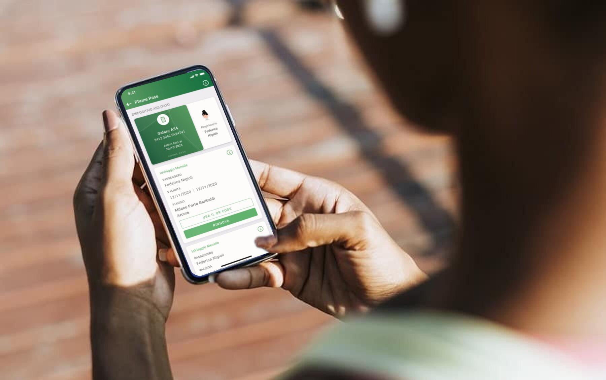
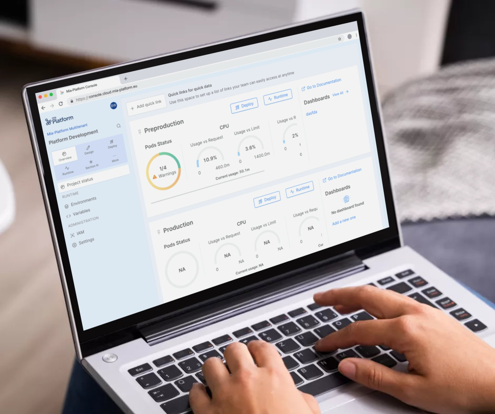
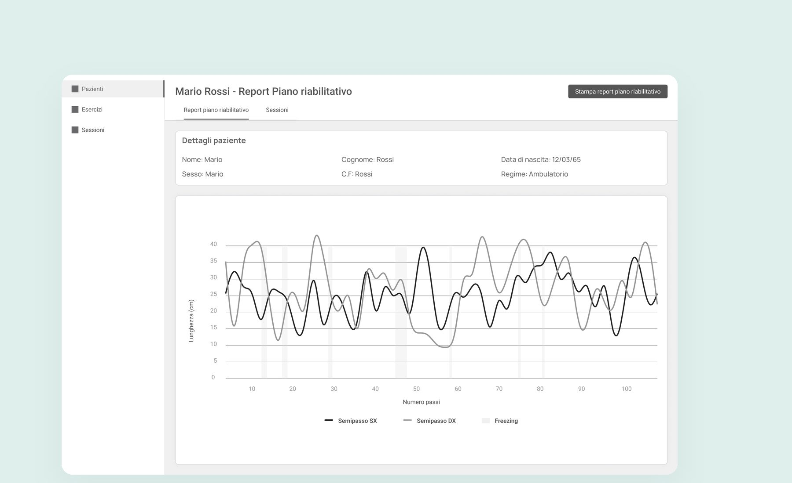
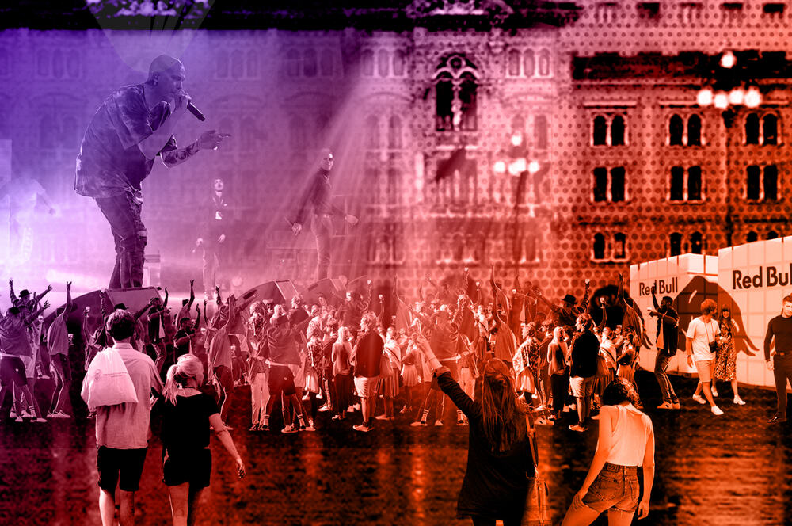
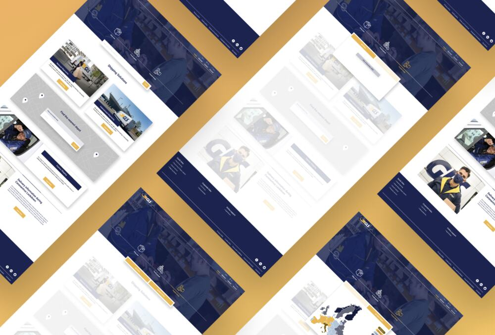
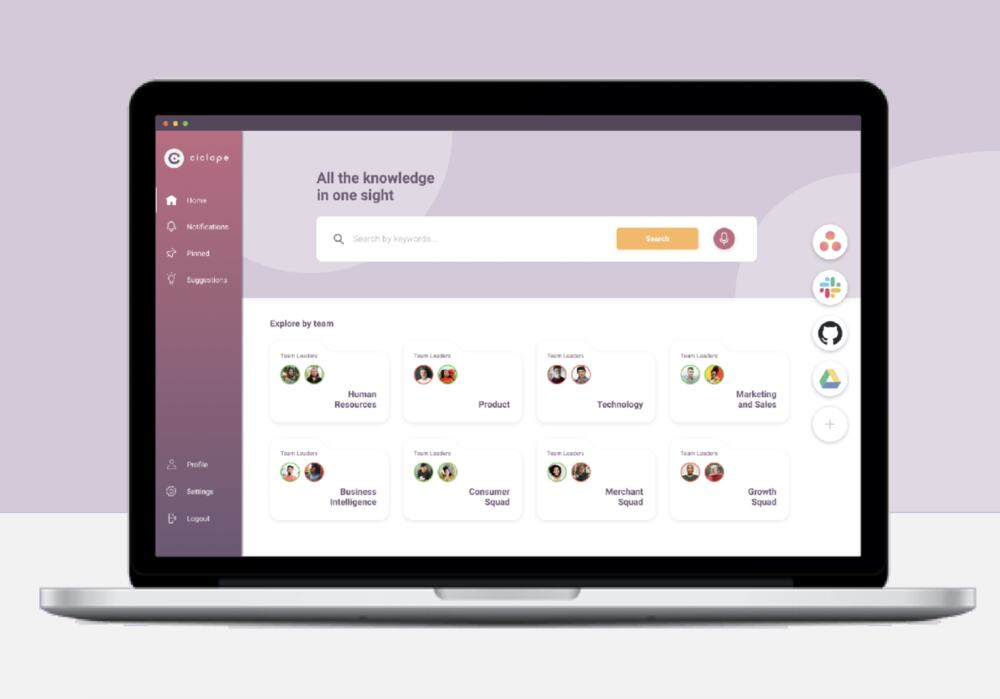
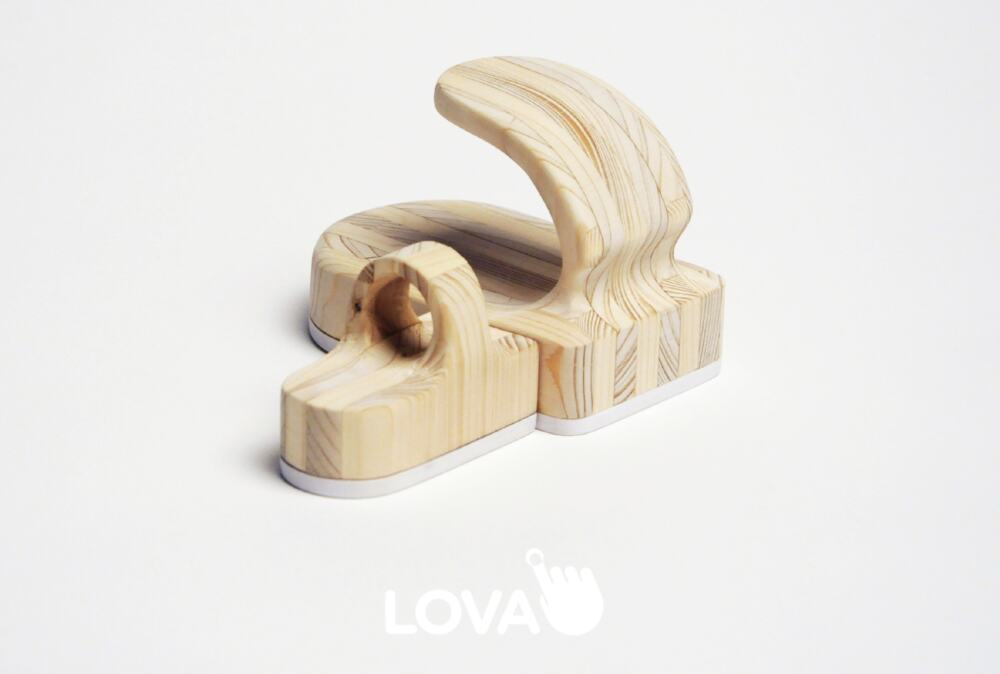
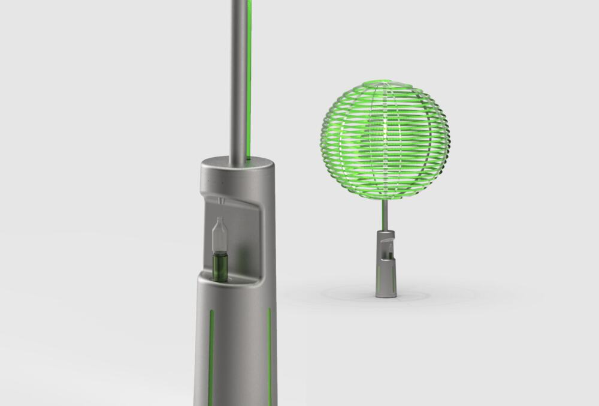
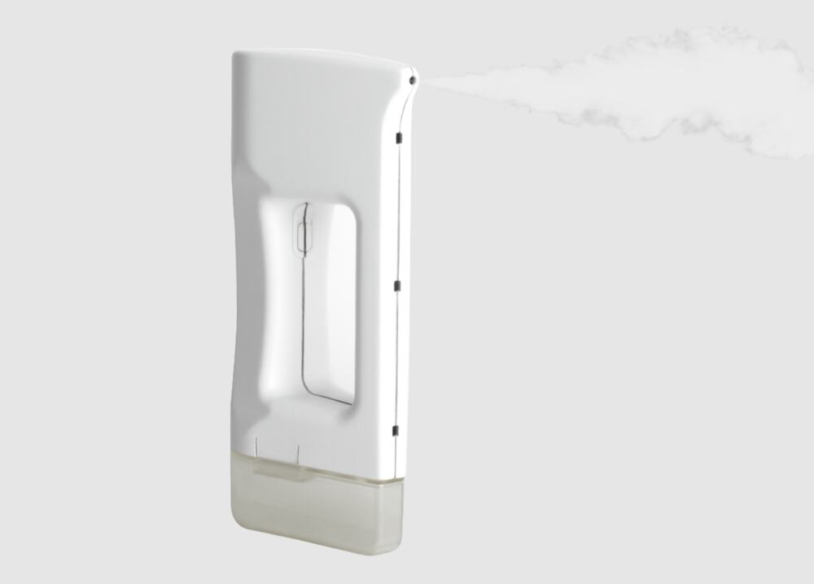

Work(10)
Products I've designed, client projects and the university work that got me here. The first four have full case studies; my university work is in the archive below.
From consultancy to product: personas, onboarding, productization and a system the team reuses.

Four years on the website and app of Lombardy's rail operator, from research to features like Phone Pass.

The Console for developers: research, a new navigation, the design system and training for designers.

App and platform for a tele-rehabilitation startup, with a wearable for gait rehab.

A third option between concerts and streaming, for an independent hip hop label.
My role · Pains · Takeaways
I took part in every stage: deadlines, team coordination and presentations. I ran the interviews and the co-design sessions, created the service visuals and details, and designed the app's wireframes and final UI.
A hard-to-reach partner and our first co-design sessions, all online. Innovating in live shows, a field that had barely changed, took a careful look at what the audience really needed.
I learned to design a service in detail within economic constraints, grew my relational skills and learned how to run a co-design session.

A heuristic redesign of the GLS website around three main user tasks.
My role · Pains · Takeaways
I analysed part of the existing website, built one of the personas and part of the presentation, designed the wireframes and UI of the homepage and of the "check delivery times" task, and built the prototype.
Our first redesign of an existing website. Testing wasn't required, so we didn't test the prototype, and I missed knowing whether usability really improved.
What to consider when redesigning a live website, and how to apply usability heuristics in practice.

Finding the right information inside a company, fast.
My role · Pains · Takeaways
I ran some of the interviews, turned insights into pain points, mapped the user journeys, defined Ciclope's details, ran the user tests and made the whole video.
Because of COVID-19 the project was entirely online. Finding inspiration to generate ideas remotely was the hardest phase.
Working with ProntoPro showed me how a real company works. Designing a platform for the first time taught me what UI design really asks for, and I applied the MEDGI methodology for the first time.

Cleans stains on clothes with one touch and no water, using photocatalysis.
My role · Pains · Takeaways
Part of every phase, from research to the end: presentations, visuals, renders, branding, booklets, the service definition, the UI and the video.
Communication inside a multicultural team was hard at first. Team building and getting to know each other made it work.
Framing a scenario, setting goals and discovering user needs, and learning to listen and mediate in a multicultural team.

A spirulina dispenser for cities that captures CO₂ and grows food.
My role · Pains · Takeaways
An individual project with a real partner, from research to engineering and the development of the service.
Facing a whole project alone, and finding a valid scope in such a complex, distant scenario. Talking often with the partner and the teachers got me through.
Managing a real client, carrying a project alone from start to engineering and meeting deadlines: it's where I became an independent designer.

A steam cleaner for glass and windows, with two accessories.
My role · Pains · Takeaways
Market research, presentation design, mockups and 3D modelling.
Finding a shape that met every technical requirement in very little space. We kept iterating until it worked from every point of view.
Technical skills for product development, like materials and assembly, and how to define the target, the goals and users' hidden needs.